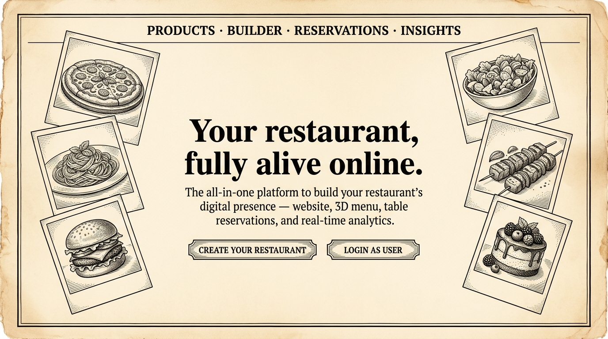

CASE FILE — EXHIBIT 01 · DINEXA.IN
The restaurant platform that manages itself
A multi-tenant SaaS handed a whole operation, not a brochure: guest accounts behind auth, visual seat-selection floor plans, table reservations, and Redis edge protection.
